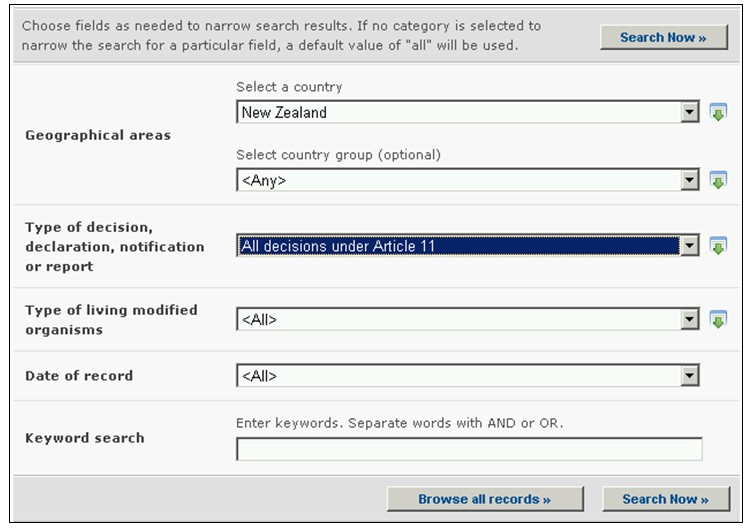

URL: http://bch.cbd.int/database/decisions/
En vertu du Protocole de Cartagena, les Parties sont responsables de rendre disponibles des informations sur leurs décisions, déclarations et autres communications pertinentes à travers le CEPRB
L’interface de recherche pour trouver l’information sur les Décisions et d’autres communications du pays est accessible depuis le lien dans le menu déroulant Trouver l'information sur la barre de navigation, ou depuis le lien dans le menu du côté gauche de la page Trouver l'information ou depuis le lien dans le texte des Décisions et d’autres communications du pays dans la même page.

Figure 29
Cette base de données permet aux utilisateurs de chercher des décisions et d’autres communications se rapportant au :
1. Rapport des Evaluations de Risques
2. toutes les Décisions en vertu de l’APCC
- Article 10.3(a) – Approuvant l’importation, avec ou sans conditions
- Article 10.3(b) – Interdisant l’importation
- Article 10.3(c) – Demandant des informations supplémentaires pertinentes
- Article 10.3(d) – Informant le notifiant que la période est prolngée
- Décision sur la dissémination d’OVMs, prise avant l’entrée en vigueur du Protocole ?
3. toutes les Décisions en vertu de l’Article 11
- Article 11.1 – Utilisation nationale d’un OVM pour l’alimentation humaine ou animale ou pour la transformation
- Article 11.4 – Importation d’un OVM pour l’alimentation humaine ou animale ou pour la transformation, prise dans le cadre national
- Article 11.6 - Importation d’un OVM pour l’alimentation humaine ou animale ou pour la transformation, prise en l’absence d’un cadre national
- Décision sur l’utilisation nationale ou l’importation d’OVM-AHAT, prise avant l’entrée en vigueur du Protocole
4. décision, déclaration, avis ou rapport au titre des Articles 6, 13, 14, 17 et 25
- Article 13.1a – Procédure simplifiée, importation au même moment que la notification,
- Article 13.1b – Procédure simplifiée – importations exemptes d’APCC
- Article 14.4 – Réglementations nationales qui s’appliquent à certaines importations spécifiques
- Article 17.1 notification – mouvement transfrontière non intentionnel
- Article 25.3 notification – mouvements transfrontières illégaux
- Article 6.1 – Transit
- Article 6.2 – utilisation en milieu confiné
5. Décision d’importation ou de dissémination, prise avant l’entrée en vigueur du Protocole
6. Déclaration faite dès la ratification ou l’accession
- Essai en champ non couvert par l’APCC
7. Autres décision, déclaration, notification ou rapport
Sur la page Recherche de décisions et d’autres Communications du Pays il y a six boîtes de recherche de critères fournies pour affiner les recherches dans cette base de données. Chacune a un menu déroulant depuis lequel il est possible de sélectionner le critère désiré. Le choix par défaut pour chaque menu déroulant est le premier critère en haut de la liste du menu. Sur le côté droit de chaque boîte, un bouton permet à l’utilisateur d’activer la sélection multiple. Une fois dans le mode sélection multiple il est possible d’ajouter plus de critères à la sélection en cliquant sur le critère approprié tout en pressant sur la touche Ctrl (Contrôle).

Figure 30
La Boîte 1 [Sélectionner un pays] donne une liste des noms de tous les pays dans un menu déroulant pour que les utilisateurs puissent sélectionner un ou plusieurs pays spécifiques à une recherche

Figure 31
La Boîte 2 [Sélectionner une région] donne une liste des régions dans un menu déroulant pour que les utilisateurs puissent sélectionner un ou plusieurs groupes de pays spécifiques à une recherche. La liste des régions comprend tous les Groupements de pays géographiques ou politiques majeurs et permet de restreindre la recherche d’enregistrements à ceux soumis seulement par les membres du ou des Groupes sélectionnés.
Figure 32
La Boîte 3 [Type de décision, déclaration, notification ou rapport] donne une liste de tous les types de décisions du pays disponibles dans la base de données. Ceci peut être utilisé pour aider à restreindre la sélection à des décisions ou communications sur des aspects spécifiques de l’utilisation d'OVM.

Figure 33
La Boîte 4 [Type d’organisme vivant modifié] permet à l’utilisateur d’appliquer des filtres pour divers aspects d’un OVM afin de restreindre plus encore la recherche pour des enregistrements qui sont spécifiquement en rapport avec le critère sélectionné.
Les catégories de filtres disponibles sont les suivants : (i) OVMs, identifiés normalement par un Identifiant Unique (par ex. MONØØ81Ø-6), (ii) Traits présentés ou modifies (par ex. Tolérance au Glyphosate), (iii) Nom du Gène (par ex. Cry1A(b)), (iv) Technique Utilisée (par ex. par Agrobacterium), (v) Nom commun de l’organisme parent (par ex. Maïs), (vi) Nom scientifique de l’organisme parent (par ex. Zea Mays) ou (vii) Demandeur (entrée de texte libre – par ex. Monsanto).
En sélectionnant un ou plusieurs critères du filtre depuis le menu déroulant on ouvre des boîtes de recherche supplémentaires avec un menu déroulant d’options, chacune en rapport avec l’un des filtres sélectionnés. Des filtres multiples peuvent être additionnés en utilisant la touche Ctrl (Contrôle) (c’est-à-dire, en cliquant sur le critère du filtre approprié tout en appuyant sur la touche Ctrl).

Figure 34
La Boîte 5 [Date de l’enregistrement] permet à l’utilisateur de restreindre la recherche à la date à laquelle l’enregistrement a été entré dans le CEPRB. Le menu déroulant fournit un certain nombre d’options pour limiter la recherche seulement aux enregistrements soumis au cours de la période sélectionnée (par ex. «dernier jour», « dernier mois», « dernière année», etc.).

Figure 35
La Boîte 6 [Recherche par mot clé] fournit une opportunité d’utiliser des mots clé pour restreindre la recherche. L’utilisateur peut utiliser une syntaxe standard avec des mots clé (combinaison d’opérateurs AND / OR) pour chercher avec plusieurs mots ou parties centrales de mots (par ex. « Importation OR Exportation »). Une recherche effectuée en utilisant des mots clé donne seulement les résultats d’enregistrements contenant exactement le texte recherché et non pas les synonymes possibles qui n’ont pas été insérés (c’est-à-dire, une recherche avec un mot clé unique « maïs » donnera une liste d’enregistrements contenant le mot « maïs » mais non pas les mots « corn » ou « Zea mays »).

Figure 36
La page de recherche offre trois boutons pour produire une liste d’enregistrements. Le bouton Rechercher (à la fois en haut et en bas de l’interface de recherche) permet à l’utilisateur d’activer une recherche sur la base des critères de recherche sélectionnés dans les boîtes des moteurs de recherche. Les résultats de la recherche sont par défaut classés alphabétiquement par pays. Le bouton (en bas de l’interface de recherche) permet à l’utilisateur d’obtenir une liste de tous les enregistrements dans cette base de données.
Les recherches identifiant plus de 1000 enregistrements sont limitées aux 1000 premiers enregistrements produits par la recherche.

Figure 37
Les pages des Résultats de la recherche ont un outil de classement en dessus de la liste d’enregistrements. Celui-ci peut être utilisé pour classer les enregistrements selon des critères spécifiques pour cette catégorie d'information. Notez que les critères de classement changent lorsque l’utilisateur sélectionne des critères de recherche différents.

Figure 38
Exemple : Un utilisateur veut identifier toutes les décisions prises par la Nouvelle-Zélande en vertu de l’Article 11 du Protocole. Il sélectionne Nouvelle-Zélande dans la boîte Sélectionnez un pays. Il sélectionne Toutes les décisions en vertu de l’article 11 dans la boîte Type de décision, de déclaration, de notification ou de rapport. Il clique sur le bouton Rechercher.
Les résultats de la recherche sont affichés comme une liste d’enregistrements. Des informations détaillées de chaque enregistrement peuvent se visualiser sélectionnant le titre de la décision (sur caractères gras et bleus).

Figure 39

Figure 40